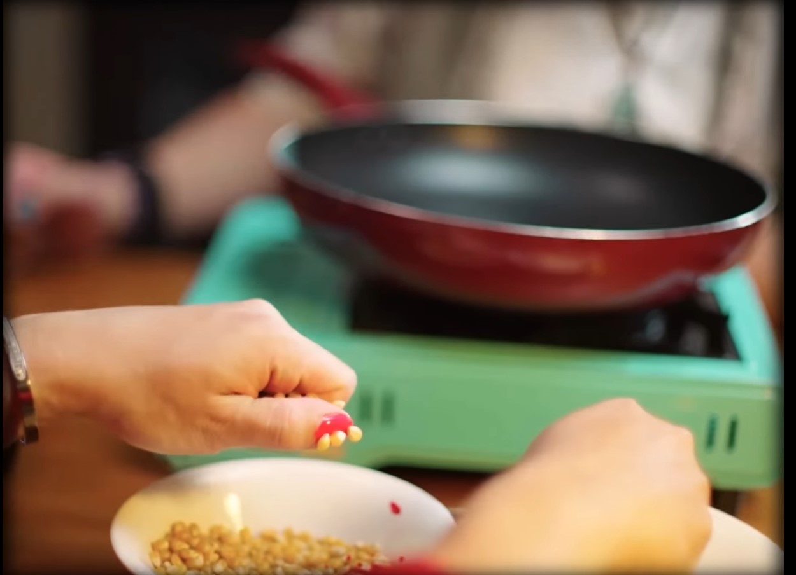
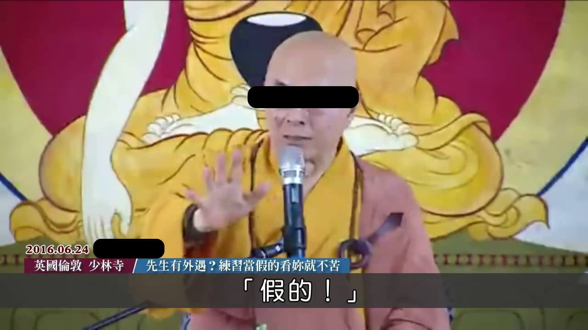
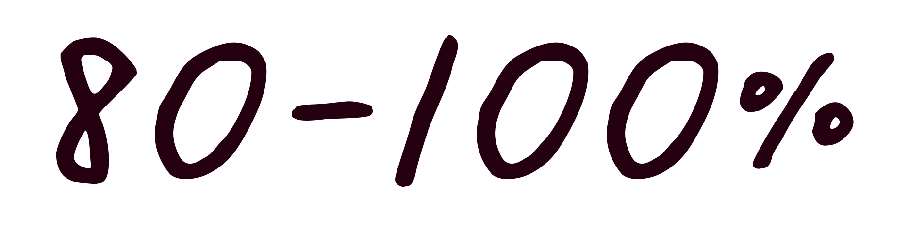
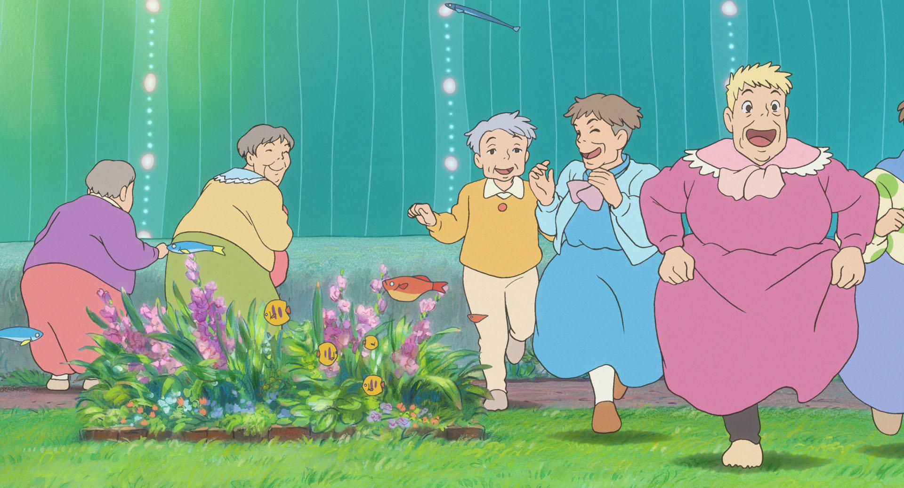
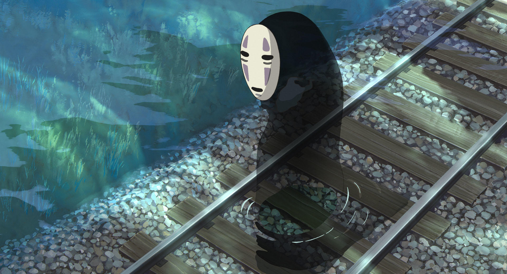

#01.「妳是彭佳慧欸」是形容女生如何？
圖片來自 - 彭佳慧維基百科
出處：Dcard文章《30就是大齡剩女？？ 彭佳慧們都給我進來》
源自一串對話截圖。對話中，男方因請求交往遭婉拒，而說出「妳是彭佳慧欸」來意指女方為「大齡女子」，以「差不多是我媽可以接受的緊繃範圍」勸女方應趁早成家。
01 / 05
下一題#02.九天玄女作法時，請女生想像：
國中國文老師和英文老師的臉
還有想像一隻「ｘｘｘ」的臉

圖片來自 - 阿翰po影片
上一題
02 / 05
下一題#05.「假的！ 哎呀！我眼睛業障重啊！」
出自哪位法師勸妻子看開丈夫外遇

圖片來自 - 洋爸沅仔廢片區
出處：海濤法師-教您如何面對丈夫外遇
源自海濤法師在法會上開導信徒，面對老公外遇要眼不見為淨。「今天晚上你回家打開門一看，你老公跟別的女人在睡覺，要馬上關上門，『假的！』，哎呀！我眼睛業障重啊！」因為若當真的，只會讓自己很生氣，法師還說，每個男人都會外遇，只是知道不知道的差別。
上一題
05 / 05
看結果測驗結果
迷因成癮指數

走在時代浪潮上的
把這些時間拿去讀書的話
早就哈佛或耶魯了吧
走在時代浪潮上的
把這些時間拿去讀書的話
早就哈佛或耶魯了吧
走在時代浪潮上的
把這些時間拿去讀書的話
早就哈佛或耶魯了吧
成績單
- 第1題
- 第2題
- 第3題
- 第4題
- 第5題


